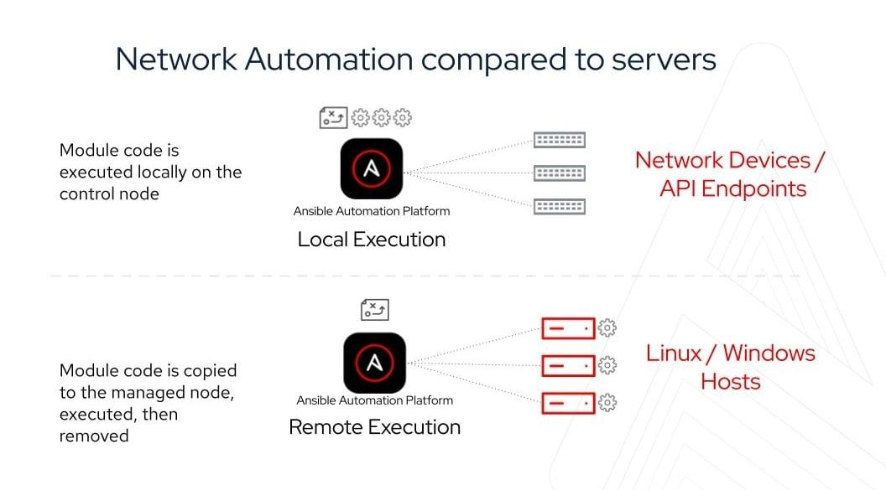

How Ansible works
Ansible is an open source, command-line IT automation software application written in Python. It can configure systems, deploy software, and orchestrate advanced workflows to support application deployment, system updates, and more.
Ansible’s main strengths are simplicity and ease of use. It also has a strong focus on security and reliability, featuring minimal moving parts. It uses OpenSSH for transport (with other transports and pull modes as alternatives), and uses a human-readable language that is designed for getting started quickly without a lot of training.
Comparing community Ansible with Red Hat Ansible Automation Platform? Understanding the differences
Community Ansible
The community distribution of Ansible contains a suite of powerful command line tools supported on most operating systems with Python installed. This includes Red Hat Enterprise Linux, Debian, Ubuntu, MacOS, FreeBSD, Microsoft Windows, and more. For more information on installing Ansible refer to the installation documentation.
Red Hat Ansible Automation Platform
Red Hat Ansible Automation Platform is a subscription product built on the foundations of Ansible with numerous enterprise features. It combines more than a dozen upstream projects into an integrated, streamlined product. Each product component also has a specific purpose with a well-defined scope. For example, the automation controller is the WebUI and API for Ansible automation, which is based on the upstream project AWX. This component is bundled into the platform to manage automation. Ansible Automation Platform is available to be run on-premise and charged by node (rather than by user), or you can use the managed service offering on Microsoft Azure.
This page will give you an overview of Ansible fundamentals that apply to both community Ansible and Red Hat Ansible Automation Platform. For more detail, please visit http://docs.ansible.com/.
| Red Hat Ansible Automation Platform: A beginner’s guide Get the e-book |
Explore Ansible Automation Platform learning materials and tools Visit the learning hub |
|
|---|---|---|
|
|
Efficient architecture
Both community Ansible and Ansible Automation Platform are built on the concept of a control node and a managed node. Ansible is executed from the control node—for example, where a user runs the ansible-playbook command. Managed nodes are the devices being automated—for example, a Microsoft Windows server.
For automating Linux and Windows, Ansible connects to managed nodes and pushes out small programs—called Ansible modules—to them. These programs are written to be resource models of the desired state of the system. Ansible then executes these modules (over SSH by default), and removes them when finished. These modules are designed to be idempotent when possible, so that they only make changes to a system when necessary.
For automating network devices and other IT appliances where modules cannot be executed, Ansible runs on the control node. Since Ansible is agentless, it can still communicate with devices without requiring an application or service to be installed on the managed node. To increase execution capacity for devices without the ability to run modules, Ansible Automation Platform can spread automation jobs out across execution nodes using a technology called automation mesh. To understand more about how network automation works, read the e-book.

For automating public clouds and web services, Ansible will also run modules locally and talk directly to their APIs. For more information, read these docs:
Credentials
For Ansible to execute, it needs an inventory (what are the managed nodes I am trying to automate?) and credentials (how do I login and connect to those managed nodes?).
Community Ansible is decentralized—meaning it relies on your existing OS credentials to control access to remote machines. And if needed, Ansible can easily connect with Kerberos, Lightweight Directory Access Protocol (LDAP), and other centralized authentication management systems. You can also just store usernames and passwords as variables for Ansible and encrypt them with Ansible Vault. This can be as easy as storing them in your inventory file, as elaborated on below.
Red Hat Ansible Automation Platform can centralized authentication as well as integrate with industry-standard tools like CyberArk AIM, Conjur, HashiCorp Vault, and Microsoft Azure Key Vault. Automation controller hashes local automation controller user passwords with the PBKDF2 algorithm using a SHA256 hash. Users who authenticate via external account mechanisms (LDAP, SAML, OAuth, and others) do not have any password or secret stored.
Read the secret handling and connection security documentation...
Manage your inventory in simple text files
By default, Ansible represents which machines it manages using a very simple INI file that puts all of your managed machines in groups of your own choosing.
To add new machines, there is no additional SSL signing server involved, so there's never any hassle deciding why a particular machine didn’t get linked up due to obscure NTP or DNS issues.
If there's another source of truth in your infrastructure, Ansible can also plug in to that, such as drawing inventory, group, and variable information from sources like Amazon Web Services, Google Compute Engine, Microsoft Azure, VMware vCenter, and more. Both community Ansible and Ansible Automation Platform can use a variety of dynamic inventory plugins. Ansible Automation Platform makes these easily available and configurable in the WebUI.
Here's what a plain text inventory file looks like:
[webservers] www1.example.com www2.example.com [dbservers] db0.example.com db1.example.com
Once inventory hosts are listed, variables can be assigned to them in simple text files (in a subdirectory called 'group_vars/' or 'host_vars/') or directly in the inventory file.
Or, as already mentioned, you can use a dynamic inventory to pull your inventory from data sources like AWS and Azure.
Ansible Playbooks: A simple and powerful automation language
Playbooks can finely orchestrate multiple slices of your IT infrastructure, with very detailed control over how many machines to tackle at a time. This is where Ansible starts to get most interesting.
Ansible's approach to orchestration is one of finely tuned simplicity, as we believe you should be able to use existing knowledge while not having to remember special syntax or features.
Here's what a playbook looks like. As a reminder, this is only here as a teaser - visit docs.ansible.com for the complete documentation, and see all that's possible.
An example apache.yml playbook might look like:
--- - name: Apache server installed hosts: web become: true tasks: - name: latest Apache version installed yum: name: httpd state: latest - name: Apache enabled and running service: name: httpd enabled: true state: started - name: copy index.html copy: src: web.html dest: /var/www/html/index.html
The Ansible documentation explores this in much greater depth. There’s a LOT more that you can do, including:
- Take machines in and out of load balancers and monitoring windows.
- Have one server know the IP address of all the others, using facts gathered about those particular servers—and use those to dynamically build out configuration files.
- Set some variables and prompt for others, and set defaults for when they are not set.
- Use the result of one command to decide whether to run another.
There are lots of advanced possibilities, but it's easy to get started.
Most importantly, the language remains readable and transparent, and you never have to do things like declare explicit ordering relationships or write code in a programming language.
Extend Ansible: plugins, modules, and API
Should you want to write your own, Ansible modules can be written in any language that can return JSON (Ruby, Python, Powershell, bash, etc). You can also plug in an inventory to any datasource by writing a program that speaks to that datasource and returns JSON. There are also various Python APIs for extending Ansible’s connection types (SSH is not the only transport possible), callbacks (how Ansible logs, etc), and even for adding new server-side behaviors.
When would you use Ansible Automation Platform instead of community Ansible?
Community Ansible is a great starting point for automation. But Red Hat Ansible Automation Platform is built with the needs of enterprise automators in mind. It delivers more capabilities for event-driven automation and generative AI, more control with added security and reporting tools, and more confidence with life cycle technical support—so you can scale automation across your organization in a flexible, standardized way.
Here are 3 example instances of when Ansible Automation Platform might make sense for an organization:
- Ansible Automation Platform can help organizations with security and support by providing fully certified and signed content. Your organization can know which automation content is the official content, and digitally signed Ansible content collections ensure an end-to-end software supply chain from development to production.
- Ansible Automation Platform can help operationalize automation at scale with automation mesh and automation execution environments. Automation mesh allows an enterprise to add resilience, automation capacity, and security to automation across IT infrastructure that spans multiple sites.
- Ansible Automation Platform can also help an organization understand their automation footprint with automation analytics. Automation analytics helps IT leaders and automation architects observe how teams are adopting automation and track the success of those efforts.
Learn more about Ansible Automation Platform...
Featured integrations
Ansible includes hundres of modules to support a wide variety of integrations, including: